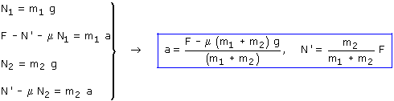
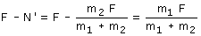

Combinando las ecuaciones obtenidas resulta un sistema de incógnitas: a, N', N1, N2  La fuerza útil que actúa sobre el bloque 2 vale: m2·F/(m1 + m2) y la fuerza útil que actúa sobre el bloque 1 vale: F - N' es decir:  La fuerza útil aplicada al sistema se reparte entre los bloques en la misma proporción en que están sus masas. Por ejemplo, si uno de los bloques tiene el 30% de la masa del conjunto se quedará con el 30% de la fuerza y el otro bloque se quedará con el 70% |